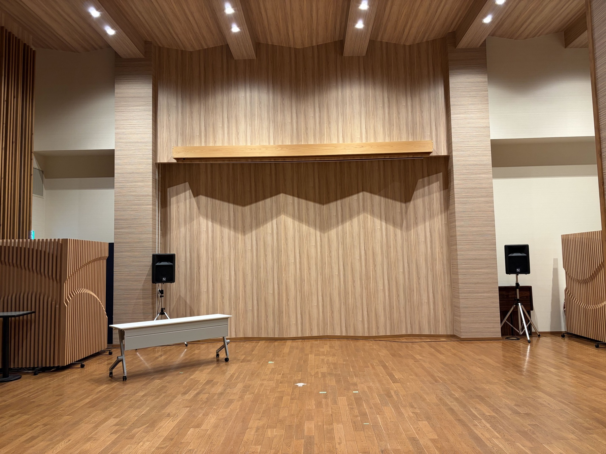
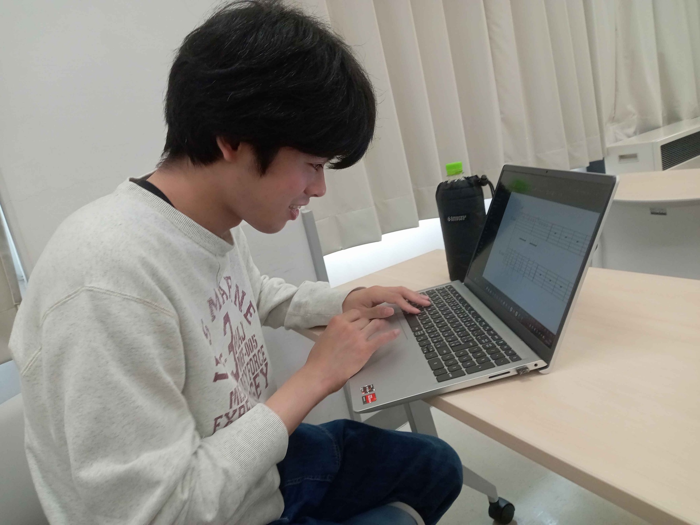

MORNING 午前
01研究中間発表
3・4年生が、それぞれの研究テーマや現在までの取り組みを発表する予定です。
発表テーマ・登壇順は後日公開Hashida Lab / Winter Presentation
一般公開・開催決定
研究と音楽。学生たちの学びの現在地を、地域のみなさまと分かち合う一日です。
12.15TUE
福知山サンホテル
扇ホール
Last updated 2026.10.23
発表会について
福知山公立大学 橋田ゼミでは、学生一人ひとりが自らの問いと向き合い、調査や制作、対話を重ねています。
冬の発表会は、その過程と成果を地域のみなさまと分かち合う場です。研究の専門知識がない方にもお楽しみいただける発表会を目指して準備を進めています。
開催日・会場・一般公開が決定しています。開始時刻と参加方法は、確定次第このサイトでご案内します。
予定プログラム
午前と午後で異なる角度から、橋田ゼミの学びと活動をお伝えします。開始時刻や登壇順などの詳細は現在調整中です。
MORNING 午前
013・4年生が、それぞれの研究テーマや現在までの取り組みを発表する予定です。
発表テーマ・登壇順は後日公開AFTERNOON 午後
02学生が学年や担当を越えて、一つの演奏をつくり上げます。
時間・構成は現在調整中※上記は2026年10月23日時点の予定です。内容は調整により変更となる場合があります。
みんなで一曲
PERFORMING
Mrs. GREEN APPLE
「点描の唄」
弦楽器、管楽器、鍵盤、打楽器、ギター、ベース、ボーカル。さまざまな担当が一つになり、橋田ゼミならではの演奏をつくります。
企画の舞台裏を見る準備の記録
楽譜づくりや合同練習、会場準備の様子を、撮影・掲載の同意が確認できたものから順次お届けします。


ご来場案内